UDN
Search public documentation:
UnrealEdInterfaceKR
English Translation
日本語訳
Interested in the Unreal Engine?
Visit the Unreal Technology site.
Looking for jobs and company info?
Check out the Epic games site.
Questions about support via UDN?
Contact the UDN Staff
日本語訳
Interested in the Unreal Engine?
Visit the Unreal Technology site.
Looking for jobs and company info?
Check out the Epic games site.
Questions about support via UDN?
Contact the UDN Staff
UnrealEd 사용자 설명서: 인터페이스
문서 요약: Unreal Ed 의 주 인터페이스에 대한 포괄적인 참조. 문서 변경 내역: 최종 업데이트 Michiel Hendriks - v3323 에 대한 변경. 이전 업데이트 Jason Lentz (DemiurgeStudios?) - 관련 문서로의 링크 . 원저자 Tomasz Jachimczak (UdnStaff).- UnrealEd 사용자 설명서: 인터페이스
- 서론
- Editor 의 주요 포인트
- 드롭다운 메뉴 옵션
- 일반적인 에디터 기능들
- 빌드 및 환경 관련 버튼들
- 뷰포트
- 명령 프롬프트 및 설정
서론
이 글은 Unreal Editor 의 인터페이스에 대해 다루며 3323 빌드를 기준으로 합니다. 이 인터페이스는 여러 섹션으로 나뉘어져, 각 섹션이 Unreal Editor 내 작업의 여러가지 측면을 취급하고 있습니다. 이 문서에서는 함수의 사용법 및 특정한 일들을 성취하는 방법 등에 대해 자세히 다루지만, 이것이 에디터 자체 내에서 실제로 무엇인가를 작성하는 방법을 보여주기 위한 가이드로서 씌여진 것은 아닙니다. 이 문서는 참조로서 작성된 것이므로, 개발자 여러분이 다른 글들을 읽고 어느 곳에서도 설명되지 않은, 익숙하지 않은 용어나 방법들을 발견했을 경우 이 문서를 참조할 수 있습니다.Editor 의 주요 포인트
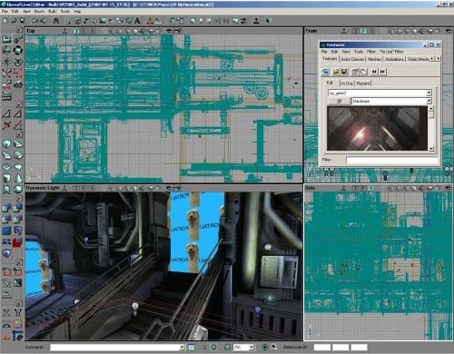
이 인터페이스는 아래에서 자세히 설명할, 8 개의 주요 섹션으로 나뉘어집니다. 이 문서에서는 앞으로 이 섹션들에 대해 자주 언급할 것이며, 여러분이 이것들을 이해하고 그 위치 및 하는 일에 대해 잘 알고 있다고 가정할 것이므로, 잠깐 시간을 내서 이 섹션들에 대해 확실하게 익혀두어야 합니다.드롭다운 메뉴 옵션
- File (파일): 파일 저장 및 열기, 환경 가져오기 및 내보내기.
- Edit (편집): 선택의 변경, 잘라내기와 붙여넣기, 복제 및 그밖의 기능들.
- View (보기): 텍스처 뷰어, 프리패브 브라우저, 액터 및 표면 속성 및 그밖의 여러 다른 윈도우들을 볼 수 있도록 해줍니다.
- Brush (브러쉬): 이 메뉴에는 현재 빌드에 사용하고 있는 브러쉬 바꾸기, 브러쉬 클립, 환경에 브러쉬 가져오기 및 내보내기 등 많은 옵션들이 있습니다.
- Build (빌드): 이 메뉴는 엔진 자체 내에서 레벨 재생/테스트하기 및 환경의 재빌드를 허용합니다. 도형, 조명, 경로 등의 재빌드 옵션이 각각 따로 있습니다.
- Tools (도구): 브러쉬 작성, 입자 에미터 재설정 및 맵과 조명의 크기 조정 등에 도움이 되는 추가 도구들.
- Help (도움말): Tip of the Day (오늘의 힌트) 옵션, UDN 으로의 링크 (이곳이 되겠습니다만), 그리고 현재 구현되지 않은 문맥 감지형 도움말 시스템.
일반적인 에디터 기능들
File 옵션들
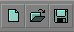
이 버튼들은 맵 새로 만들기, 파일 열기 또는 현재의 작업 저장하기를 할 수 있도록 합니다. 맨 위에 있는 메뉴에서, 그리고 단축 키를 통해 이 옵션들을 이용할 수도 있습니다 (새로 만들기: CTRL +N; 열기: CTRL +O; 저장: CTRL+L).Undo (실행 취소) 와 Redo (재실행)
Search for Actors (액터 검색)

브라우저들
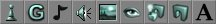
이 버튼들은 브라우저를 엽니다. 이 브라우저들을 차례로 설명하겠습니다 (왼쪽에서 오른쪽으로).Actor(액터) 브라우저
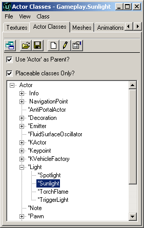
Actor 브라우저는 Unreal Engine 에 있는 Actor 클래스들을 열람하도록 합니다. 이것은 에디터에 의해 로드된 클래스들을 모두 열람합니다. 클래스들이 추가로 브라우저에 로드되어 사용될 수 있습니다. 에디터에서 클래스를 여는 것은 환경에 특정 액터들을 배치하기 위해서입니다. 클래스를 더블 클릭하면 해당 액터에 대한 실제 소스 코드가 열리고, 소스 코드의 변경이 허용됩니다. 소스 코드를 편집한 다음에는 반드시 패키지를 재컴파일 해야 합니다. 선택한 액터를 액터 목록에서 환경 내로 배치하려면 필요한 액터를 하이라이트 합니다 (이 경우에는 Actor > Info > Light > Sunlight 에 있는 Sunlight 액터). 액터의 이름 옆에 있는 플러스와 마이너스 기호는 계층 트리를 확장하거나 접는데 사용됩니다. 필요한 액터를 선택한 후 에디터 윈도우들 중 하나를 오른 클릭하면, 목록에서 선택한 액터를 (공간이 허용하는한) 클릭한 지역에 배치할 수 있습니다. 아래의 이미지는 오른 클릭 후 이 특정 액터의 배치를 보여줍니다.
Groups (그룹) 브라우저
 Groups 브라우저를 사용하면 액터들을 함께 그룹으로 만들 수 있습니다. 액터들이 한데 그룹지어지면, 쉽게 그룹을 찾아 그 안에서 정보를 편집하거나 변경을 가할 수 있습니다. 이 브라우저에서 특정 그룹의 체크를 해제하면, 에디터에서 그 그룹이 완전히 시야에서 제거됩니다.
Groups 브라우저를 사용하면 액터들을 함께 그룹으로 만들 수 있습니다. 액터들이 한데 그룹지어지면, 쉽게 그룹을 찾아 그 안에서 정보를 편집하거나 변경을 가할 수 있습니다. 이 브라우저에서 특정 그룹의 체크를 해제하면, 에디터에서 그 그룹이 완전히 시야에서 제거됩니다.
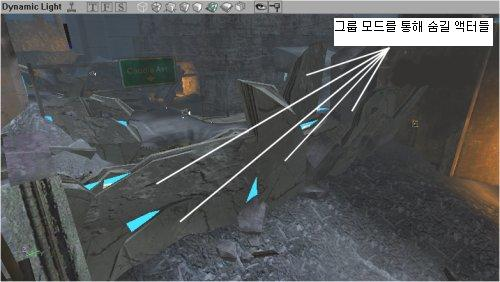
따라서, 이 그룹에 추가하고 싶은 첫 브러쉬를 선택하고 브라우저에서 "Create New Group" 버튼을 클릭하여 새 그룹을 만듭니다. 그 다음 그 그룹에 붙여주고자 하는 이름을 입력하고 Enter 키를 누릅니다 (이리하여 새 그룹이 만들어집니다). 새 그룹이 만들어지면 그룹 이름을 입력하라는 프롬프트가 나타납니다. 새 그룹을 만들 때 여러 개의 액터를 선택할 수 있다는 점을 알아 두십시오.
새 그룹이 만들어지면 그룹 이름을 입력하라는 프롬프트가 나타납니다. 새 그룹을 만들 때 여러 개의 액터를 선택할 수 있다는 점을 알아 두십시오.
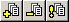
Groups 브라우저에서 이 세 개의 버튼들은 현재의 그룹에 새 액터 추가하기, 선택한 그룹에서 선택한 액터 삭제하기 그리고 그룹 목록 갱신하기를 할 수 있도록 합니다. 그룹을 다룰 때는 액션이 행해질 때마다 그룹이 자동으로 갱신되기 때문에, Refresh group listings (그룹 목록 갱신하기)는 현재로서는 별로 유익한 것 같지 않습니다. 여기서는 3D 뷰포트에서 브러쉬들이 추가로 더 선택되었습니다. 브라우저에서, "Add Selected Actors to Group(s) (선택한 액터를 그룹에 추가)" 버튼을 클릭함으로써 이것들을 그룹에 추가합니다. 이것으로서 원하는 브러쉬들이 모두 그룹에 추가되었습니다. 이제 이 환경에서 작업을 계속하기 위해 이 액터들을 볼 필요가 없습니다. 그리고 이 액터들을 시야에서 숨기면 에디터에서의 엔진 렌더링 시스템 속도가 높아질 것입니다. Groups 브라우저에서 그룹 이름 옆에 있는 체크박스의 체크를 해제하면 이 액터들이 숨겨집니다.
여기서는 3D 뷰포트에서 브러쉬들이 추가로 더 선택되었습니다. 브라우저에서, "Add Selected Actors to Group(s) (선택한 액터를 그룹에 추가)" 버튼을 클릭함으로써 이것들을 그룹에 추가합니다. 이것으로서 원하는 브러쉬들이 모두 그룹에 추가되었습니다. 이제 이 환경에서 작업을 계속하기 위해 이 액터들을 볼 필요가 없습니다. 그리고 이 액터들을 시야에서 숨기면 에디터에서의 엔진 렌더링 시스템 속도가 높아질 것입니다. Groups 브라우저에서 그룹 이름 옆에 있는 체크박스의 체크를 해제하면 이 액터들이 숨겨집니다.
 드디어 지금까지의 작업이 에디터의 3D 뷰포트에 나타난 모습입니다 – 차단물을 보기좋게 없앴습니다. 물론 차단물은 여전히 거기 있으며, 이것이 다시 보이게 하려면, Groups 브라우저에서 그룹의 이름을 체크하기만 하면 됩니다.
드디어 지금까지의 작업이 에디터의 3D 뷰포트에 나타난 모습입니다 – 차단물을 보기좋게 없앴습니다. 물론 차단물은 여전히 거기 있으며, 이것이 다시 보이게 하려면, Groups 브라우저에서 그룹의 이름을 체크하기만 하면 됩니다.
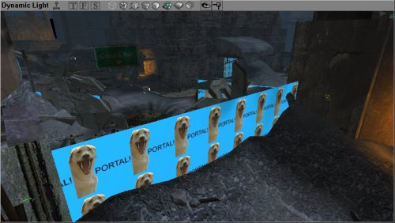
Music (음악) 브라우저
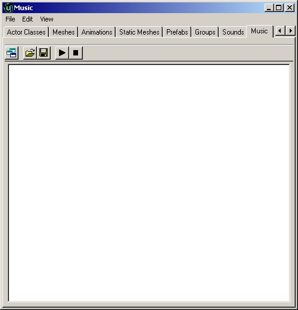
Music 브라우저는 Sound 브라우저와 비슷합니다. 이것은 음악 파일들을 열어 음악을 들을 수 있도록 합니다. 음악 파일들은 .umx 포맷으로 저장되어 있습니다. 이것은 이 파일들이 사운드 파일이라기보다는, (파일에 악기에 대한 사운드의 견본이 포함되어 있다는 점을 제외하면) midi (미디) 파일에 더 가깝다는 뜻입니다. 이제 .umx 포맷이 더 이상 지원되지 않아 이 브라우저는 쓸모가 없게 되었습니다.Sound (사운드) 브라우저
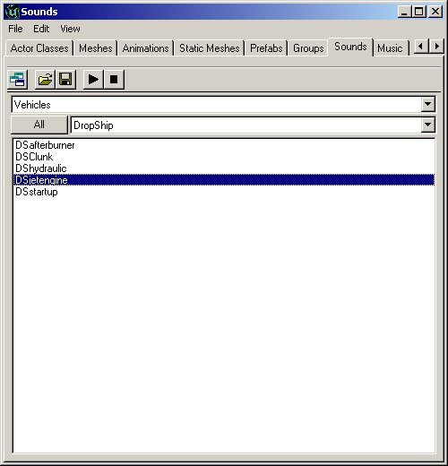
Sound 브라우저는 Unreal 의 Sound 패키지들을 열고, 재생하고, 검색할 수 있도록 합니다. 또 새 사운드 패키지 만들기, 현재의 패키지에 새 사운드 삽입하기 및 그밖의 많은 기능들이 있습니다. SoundActor에 대한 자세한 정보는 ExampleMapsSoundsKR 문서를 참고하십시오.Texture (텍스처) 브라우저
 다른 브라우저들과 마찬가지로, 텍스처 패키지 열기, 패키지 내의 다양한 범주 정렬하기, 새 패키지 만들기 그리고 패키지에 새 텍스처 삽입하기 등을 할 수 있는 브라우저입니다. 필요한 텍스처를 보다 쉬운 방법으로 찾는데 도움이 되는 filter (필터) 옵션도 있습니다. 이것은 텍스처의 이름에 filter 필드에 입력된 문자열이 있는지 확인하기(해당 문자열로 시작되는 것 뿐만이 아니라, 이름중에 그 문자열이 들어 있는 것들도) 위한 점검을 합니다. 이름에 검색 문자열이 포함되지 않은 텍스처는 숨겨집니다.
많은 텍스처 패키지들은 조직을 용이하게 하기 위해 그룹들로 작게 나뉘어집니다. 위의 이미지에서는 "Skins" 그룹이 열려 있으므로, 오직 Skins 그룹 내의 텍스처들만이 브라우저에 표시됩니다. groups 필드 (Skins 가 선택되어 있는)를 클릭하여 원하는 그룹을 선택함으로써 다른 그룹을 선택할 수 있습니다. 또는, "All" 버튼을 클릭하면 해당 패키지 내의 모든 텍스처가 표시됩니다. "All" 버튼 옆에 있는 "!" 버튼은 모든 텍스처들을 실시간으로 표시합니다. 대부분의 텍스처에는 이것이 영향을 주지 않지만, 애니메이트된 텍스처라든가 특수 환경이 맵된 쉐이더가 있을 경우에는 이것들이 마치 게임중에서처럼 표시됩니다.
그밖에, 텍스처 브라우저에는 "In-Use(사용중)" 및 "MRU" 또는 `Most Recently Used (최근에 사용된 것)' 설정이 있습니다 . 이 옵션들은 빠른 이용을 위해 현재 환경에서 사용중인 텍스처들 및 가장 최근에 사용된 텍스처들을 표시합니다.
다른 브라우저들과 마찬가지로, 텍스처 패키지 열기, 패키지 내의 다양한 범주 정렬하기, 새 패키지 만들기 그리고 패키지에 새 텍스처 삽입하기 등을 할 수 있는 브라우저입니다. 필요한 텍스처를 보다 쉬운 방법으로 찾는데 도움이 되는 filter (필터) 옵션도 있습니다. 이것은 텍스처의 이름에 filter 필드에 입력된 문자열이 있는지 확인하기(해당 문자열로 시작되는 것 뿐만이 아니라, 이름중에 그 문자열이 들어 있는 것들도) 위한 점검을 합니다. 이름에 검색 문자열이 포함되지 않은 텍스처는 숨겨집니다.
많은 텍스처 패키지들은 조직을 용이하게 하기 위해 그룹들로 작게 나뉘어집니다. 위의 이미지에서는 "Skins" 그룹이 열려 있으므로, 오직 Skins 그룹 내의 텍스처들만이 브라우저에 표시됩니다. groups 필드 (Skins 가 선택되어 있는)를 클릭하여 원하는 그룹을 선택함으로써 다른 그룹을 선택할 수 있습니다. 또는, "All" 버튼을 클릭하면 해당 패키지 내의 모든 텍스처가 표시됩니다. "All" 버튼 옆에 있는 "!" 버튼은 모든 텍스처들을 실시간으로 표시합니다. 대부분의 텍스처에는 이것이 영향을 주지 않지만, 애니메이트된 텍스처라든가 특수 환경이 맵된 쉐이더가 있을 경우에는 이것들이 마치 게임중에서처럼 표시됩니다.
그밖에, 텍스처 브라우저에는 "In-Use(사용중)" 및 "MRU" 또는 `Most Recently Used (최근에 사용된 것)' 설정이 있습니다 . 이 옵션들은 빠른 이용을 위해 현재 환경에서 사용중인 텍스처들 및 가장 최근에 사용된 텍스처들을 표시합니다.
Mesh (메쉬) 브라우저
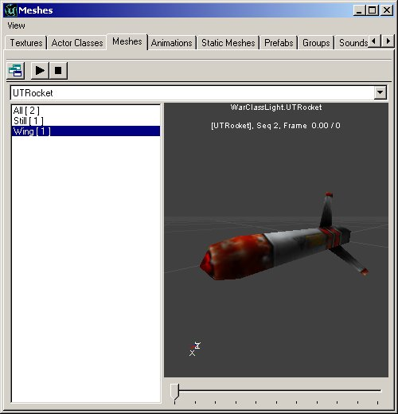
Mesh 브라우저는 시스템 파일에서 메쉬들을 검색할 수 있도록 합니다. 이 메쉬들은 단지 장식용일 뿐만 아니라, 렌더링을 위해 이들을 호출하는 다른 액터들에 의해 실제로 사용될 수 있습니다 (픽업들이 그 좋은 예입니다).이곳에서 메쉬와 그들 특유의 애니메이션을 볼 수 있습니다. 그 외에 맨 아래에는 스크롤바가 있는데, 이것을 사용하면 애니메이션의 일정 지점을 건너 뛸 수 있습니다. 또 play 버튼을 누르면 애니메이션을 루프하여 계속해서 실행될 경우 어떻게 보이게 되는지 확인할 수 있습니다. 모든 애니메이션들이 다 잘 루프하지는 않습니다. 예를 들면, 보행 애니메이션은 잘 루프하지만 병사의 죽음 애니메이션은 잘 루프하지 않을 것입니다 (메쉬의 시작 프레임이 마지막 것과 다르게 보이며, 따라서 메쉬가 한 프레임에서 다른 프레임으로 건너뛰는 지점이 있습니다).Prefab (프리패브) 브라우저
 Prefab 브라우저에서는 여러분의 환경에 그룹으로서 붙여넣을 수 있는 액터와 브러쉬의 `패키지'를 만들 수 있습니다. 이 브라우저는 프리패브에 있는 정보를 별도의 파일에 저장합니다. 따라서 한 레벨에 있는 프리패브 파일들을 다른 레벨에서 쉽게 사용할 수 있습니다. 일단 프리패브가 환경에 배치되는 순간부터, 패키지 파일이 없이도 환경에서 프리패브를 볼 수 있다는 것을 알아두는 일이 중요합니다 (물론 나중에 사용하기 위해 보관해두는 것은 좋습니다). 프리패브 패키지들은 .t3d 파일로서 보존되며 액터, 브러쉬 및 Unreal 환경에 표시될 수 있는 정보는 무엇이든 함유할 수 있습니다.
프리패브를 환경에 배치하는 것은 마치 각각의 개별 액터를 수동으로 배치하는 것과 같습니다 – 작업량이 더 적을뿐입니다. 개별 액터와 프리패브를 통해 배치된 액터 사이에는 차이가 없습니다. 배치되는 순간, 각 프리패브는 추가된 다른 프리패브에 영향을 주지 않으면서 개별적으로 변경될 수 있습니다.
Prefab 브라우저에서는 여러분의 환경에 그룹으로서 붙여넣을 수 있는 액터와 브러쉬의 `패키지'를 만들 수 있습니다. 이 브라우저는 프리패브에 있는 정보를 별도의 파일에 저장합니다. 따라서 한 레벨에 있는 프리패브 파일들을 다른 레벨에서 쉽게 사용할 수 있습니다. 일단 프리패브가 환경에 배치되는 순간부터, 패키지 파일이 없이도 환경에서 프리패브를 볼 수 있다는 것을 알아두는 일이 중요합니다 (물론 나중에 사용하기 위해 보관해두는 것은 좋습니다). 프리패브 패키지들은 .t3d 파일로서 보존되며 액터, 브러쉬 및 Unreal 환경에 표시될 수 있는 정보는 무엇이든 함유할 수 있습니다.
프리패브를 환경에 배치하는 것은 마치 각각의 개별 액터를 수동으로 배치하는 것과 같습니다 – 작업량이 더 적을뿐입니다. 개별 액터와 프리패브를 통해 배치된 액터 사이에는 차이가 없습니다. 배치되는 순간, 각 프리패브는 추가된 다른 프리패브에 영향을 주지 않으면서 개별적으로 변경될 수 있습니다.
Static Mesh (정적 메쉬) 브라우저
 Static Mesh 브라우저에서는 패키지 파일에 있는 정적 메쉬 보기, 환경에 새 정적 메쉬 추가하기, 그리고 환경에서 선택한 것들로부터 정적 메쉬 만들기 등의 작업을 할 수 있습니다. 정적 메쉬에는 애니메이션 데이터가 전혀 들어 있지 않으므로 (이름 그대로), 애니메이션이 없는 아이템들만이 정적 메쉬를 작성하는데 사용될 수 있습니다.
StaticMesh 및 StaticMesh 브라우저에 대한 자세한 정보는 StaticMeshesTutorialKR 을 참고하십시오.
Static Mesh 브라우저에서는 패키지 파일에 있는 정적 메쉬 보기, 환경에 새 정적 메쉬 추가하기, 그리고 환경에서 선택한 것들로부터 정적 메쉬 만들기 등의 작업을 할 수 있습니다. 정적 메쉬에는 애니메이션 데이터가 전혀 들어 있지 않으므로 (이름 그대로), 애니메이션이 없는 아이템들만이 정적 메쉬를 작성하는데 사용될 수 있습니다.
StaticMesh 및 StaticMesh 브라우저에 대한 자세한 정보는 StaticMeshesTutorialKR 을 참고하십시오.
Animation (애니메이션) 브라우저
 Animation 브라우저는 메쉬, 뼈대 구조, 영향 및 여러 메쉬 애니메이션의 속성들을 자세히 볼 수 있도록 해줍니다. 이 브라우저는 뼈대 메쉬가 가져오기되도록 하는 것을 비롯한 다른 애니메이션 기능들을 허용합니다.
자세한 정보는 AnimBrowserTutorialKR? 과 AnimBrowserReferenceKR? 문서를 참고하십시오.
Animation 브라우저는 메쉬, 뼈대 구조, 영향 및 여러 메쉬 애니메이션의 속성들을 자세히 볼 수 있도록 해줍니다. 이 브라우저는 뼈대 메쉬가 가져오기되도록 하는 것을 비롯한 다른 애니메이션 기능들을 허용합니다.
자세한 정보는 AnimBrowserTutorialKR? 과 AnimBrowserReferenceKR? 문서를 참고하십시오.
2D Shape Editor 와 UnrealScript Editor
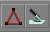
이 두 버튼은 각각 2D Shape Editor (2D 형상 에디터)와 UnrealScript Editor (UnrealScript? 에디터)를 열어줍니다.2D 형상 에디터
 2D 형상 에디터는 디자이너들이 원형보다 더 복잡한 형상들을 만들 수 있도록 해주는 도구입니다. 그렇지만 이 도구로 아주 복잡한 형상을 만들지는 못합니다 (예를 들어 3DMax 로 할 수 있는 것처럼). 이 도구에 대해서는 2D ShapeEditorKR 문서에 훨씬 자세하게 설명되어 있습니다.
이것의 기능은 한정되어 있지만, 애초에 고급 소프트웨어를 대체하기 위해 설계된 것이 아닙니다.
2D 형상 에디터는 디자이너들이 원형보다 더 복잡한 형상들을 만들 수 있도록 해주는 도구입니다. 그렇지만 이 도구로 아주 복잡한 형상을 만들지는 못합니다 (예를 들어 3DMax 로 할 수 있는 것처럼). 이 도구에 대해서는 2D ShapeEditorKR 문서에 훨씬 자세하게 설명되어 있습니다.
이것의 기능은 한정되어 있지만, 애초에 고급 소프트웨어를 대체하기 위해 설계된 것이 아닙니다.
UnrealScript 에디터
 Unreal Editor 와 함께 제공되는 UrealScript 에디터는 패키지 클래스들을 변경할 수 있는 간단한 텍스트 편집 도구입니다. 이것은 매우 편리한 추가 도구이지만, 이곳에서 대형 또는 복잡한 코드를 작성하도록 설계된 것은 아닙니다. UDE 같은, 보다 강력한 에디터들이 많이 있지만 어떤 텍스트 에디터라도 충분할 것입니다. 그러나 UrealScript? 에디터는 다만 몇 줄의 코드를 신속하게 변경할 필요가 있을 때 유용합니다. 이것은 또 모든 스크립트가 패키지 파일 내로 컴파일 되도록 해줍니다.
Unreal Editor 와 함께 제공되는 UrealScript 에디터는 패키지 클래스들을 변경할 수 있는 간단한 텍스트 편집 도구입니다. 이것은 매우 편리한 추가 도구이지만, 이곳에서 대형 또는 복잡한 코드를 작성하도록 설계된 것은 아닙니다. UDE 같은, 보다 강력한 에디터들이 많이 있지만 어떤 텍스트 에디터라도 충분할 것입니다. 그러나 UrealScript? 에디터는 다만 몇 줄의 코드를 신속하게 변경할 필요가 있을 때 유용합니다. 이것은 또 모든 스크립트가 패키지 파일 내로 컴파일 되도록 해줍니다.
Property (속성) 브라우저
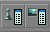
이 두 버튼들은 Unreal Editor 에서 Property 액터들을 열어줍니다. 이것들은 각각 Actor Properties (액터의 속성)과 Surface Properties (표면의 속성)을 엽니다.액터의 속성
 Actor Properties 브라우저에서는 특정 액터 내에 보존된 정보를 보거나 변경할 수 있습니다. 보존된 정보에는 액터의 이름, 액터의 속성들 (예: 광원의 밝기 설정, 트리거된 이벤트 이름, 존의 중력) 등의 아이템들이 포함됩니다. 이 브라우저는 그 액터 클래스가 아니라 해당 특정 액터에 대한 이 엔트리들이 변경될 수 있도록 해줍니다. 이 속성들의 예를 참고하려면 한 Actor 에 대한 기본 설정들에 대해 설명한 ActorVariablesKR 문서를 살펴 보십시오.
Actor Properties 브라우저에서는 특정 액터 내에 보존된 정보를 보거나 변경할 수 있습니다. 보존된 정보에는 액터의 이름, 액터의 속성들 (예: 광원의 밝기 설정, 트리거된 이벤트 이름, 존의 중력) 등의 아이템들이 포함됩니다. 이 브라우저는 그 액터 클래스가 아니라 해당 특정 액터에 대한 이 엔트리들이 변경될 수 있도록 해줍니다. 이 속성들의 예를 참고하려면 한 Actor 에 대한 기본 설정들에 대해 설명한 ActorVariablesKR 문서를 살펴 보십시오.
표면의 속성
 Surface Properties 윈도우에서는 선택된 표면의 속성을 변경할 수 있습니다. 3D 뷰에서 표면을 클릭하면 그 표면이 선택되며, CTRL 키를 누른 채로 여러 개의 표면을 클릭하면 한 번에 여러 표면들을 선택할 수 있습니다. 표면을 오른 클릭한 다음 SELECT SURFACES>Option 을 선택하면 인접한 표면, 비슷한 타입 또는 그밖의 많은 것들을 자동으로 선택할 수 있습니다 (이 메뉴에는 기타 표면 선택을 위한 단축 키가 표시되어 있습니다).
Surface Properties 윈도우에서는 선택된 표면의 속성을 변경할 수 있습니다. 3D 뷰에서 표면을 클릭하면 그 표면이 선택되며, CTRL 키를 누른 채로 여러 개의 표면을 클릭하면 한 번에 여러 표면들을 선택할 수 있습니다. 표면을 오른 클릭한 다음 SELECT SURFACES>Option 을 선택하면 인접한 표면, 비슷한 타입 또는 그밖의 많은 것들을 자동으로 선택할 수 있습니다 (이 메뉴에는 기타 표면 선택을 위한 단축 키가 표시되어 있습니다).
재빌드와 재빌드 옵션
Build Geometry (도형 빌드하기)
Build Lighting (조명 빌드하기)
Build Changed Lighting (변경된 조명 빌드하기)
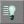
이것은 추가되거나 변경된 광원만 재빌드한다는 점을 제외하면 Build Lighting 버튼과 매우 비슷한 작용을 합니다. 그러므로 재빌드가 더 빠릅니다.Build Paths (경로 빌드하기)
Build Changed Paths (변경된 경로 빌드하기. 2107 이상에서만 이용 가능)
Build All (모두 빌드하기)
Build Options (빌드 옵션)

Play Map (맵 재생하기)
빌드 및 환경 관련 버튼들
 이번에는 화면의 왼편에 세로로 있는 툴바입니다. 이 버튼들은 모두 실제로 세계를 작성하는데 사용됩니다. 이 툴바는 버튼들이 용도에 따라 그룹지어진 6 개의 섹션으로 나누어집니다. 가장 위의 것부터 차례로 설명하겠습니다.
이번에는 화면의 왼편에 세로로 있는 툴바입니다. 이 버튼들은 모두 실제로 세계를 작성하는데 사용됩니다. 이 툴바는 버튼들이 용도에 따라 그룹지어진 6 개의 섹션으로 나누어집니다. 가장 위의 것부터 차례로 설명하겠습니다.
카메라 및 기타
 카메라 이동, 브러쉬 크기 변경, 텍스처 정렬 및 그밖의 여러 기능을 사용할 수 있도록 하는 옵션들입니다.
카메라 이동, 브러쉬 크기 변경, 텍스처 정렬 및 그밖의 여러 기능을 사용할 수 있도록 하는 옵션들입니다.
Camera Movement (카메라 이동)
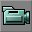
이 옵션을 선택하면 화면상의 뷰포트에서 카메라를 마음대로 이동할 수 있습니다. 카메라 및 기타 섹션에서 옵션을 하나 더 선택해도 여전히 카메라를 마음대로 움직일 수 있으며, 다른 옵션들을 이용할 수도 있습니다.Edit Vertices (정점 편집)
Scale Brush (브러쉬 크기 조정)
Brush Rotate (브러쉬 회전)
Texture Pan (텍스처 팬하기)
Texture Rotate (텍스처 회전)
Brush Clipping Markers (브러쉬 클리핑 표시기)
Freehand Polygon Drawing (자유자재로 폴리곤 그리기)
Face Drag (면 끌기)
Terrain Editor (지형 에디터)
이 버튼을 누르면 하이트맵을 바탕으로 사실적인 지형을 만들 수 있는 Terrain Editor 가 열립니다.이 문서에서는 Terrain Editor 의 인터페이스를 보여드리지만, 이에 관해 더 자세한 내용은 다루지 않습니다. 이 도구에 대해서는 TerrainTutorial 문서에 매우 상세하게 설명되어 있습니다.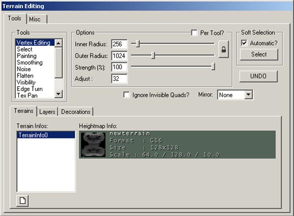
Matinee Editor (마티네 에디터)
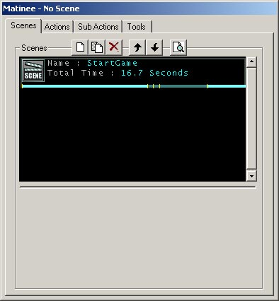
브러쉬 클리핑
 이 기능들은 브러쉬의 클립, 클리핑 평면 이동 및 브러쉬들을 따로 분할하는데 사용됩니다.
이 기능들은 브러쉬의 클립, 클리핑 평면 이동 및 브러쉬들을 따로 분할하는데 사용됩니다.
Clip Selected Brush (선택한 브러쉬 클립)
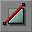
이 기능을 사용하면 선택한 브러쉬가 클립됩니다 (위에서 설명한 브러쉬 클리핑 표시기 기능에서 설정된 클리핑 표시기에 의해). 브러쉬는 언제나 클리핑 선의 가운데서 뻗어나온 작은 선이 가리키는, 클리핑 평면의 방향에서 클립됩니다.Split Selected Brush (선택한 브러쉬 분할)
Flip Clipping Normal (클리핑 노멀 반전)
Delete Clipping Markers (클리핑 표시기 삭제)
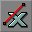
이 기능은 환경에 있는 클리핑 표시기들을 삭제합니다. 간단히 (위에서 설명한) Brush Clipping Markers 버튼의 선택을 해제하여 삭제할 수도 있지만, 클리핑이 더 필요하거나 새로운 표시기가 필요해질 수도 있습니다.Brush Primitives (브러쉬의 원형들)
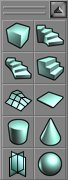
이 기능들은 환경에서 사용하기 위한 기본적인 브러쉬들을 만드는데 사용됩니다. 브러쉬 빌더의 치수를 변경하려면 브러쉬 버튼을 오른 클릭*하십시오. 윈도우가 하나 나타날 것입니다. 이 윈도우에 원하는 치수를 직접 입력할 수도 있고, 또는 (*"1024+256" 같은) 식을 입력해도 됩니다. 이제 각 브러쉬 빌더 도구에 대해 자세히 설명하겠습니다.Create Cube (큐브 만들기)
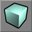
이 기능은 큐브 또는 직사각형 브러쉬를 만듭니다. 지난 번에 사용한 설정을 이용하여 브러쉬를 만들려면 마우스 왼쪽 버튼을 클릭하십시오. 새로운 설정을 입력하려면 마우스 오른쪽 버튼을 클릭하십시오. 그러면 다음과 같은 메뉴가 나타날 것입니다. 다음은 큐브 원형에 대한 설정입니다.
다음은 큐브 원형에 대한 설정입니다.
| Height | 작성되는 브러쉬의 높이. |
| Width | 작성되는 브러쉬의 넓이. |
| Breadth | 작성되는 브러쉬의 폭. |
| WallThickness | 해당 브러쉬에 대한 hollow 설정이 선택된 경우, 브러쉬 내 벽의 두께를 말합니다. |
| GroupName | 나중에 브러쉬를 검색하거나 정렬하는 기준이 되는 선택적 옵션. |
| Hollow | 이 설정은 위의 WallThickness 와 함께 쓰입니다. 이것이 True 로 설정되면, 안이 비고 단단한 벽을 가진 상자 같은 브러쉬가 만들어집니다. |
| Tessellated | 이것이 True 로 설정되면 브러쉬의 면이 직사각형이 아니라 삼각형으로 만들어집니다. 이것은 HOM 의 인스턴스를 극적으로 감소시키기 때문에 나중에 브러쉬에 정점 편집을 행할 경우 유용합니다. 이 옵션이 True 일 경우, 이 브러쉬에서 3 개 이상의 정점을 가지는 폴리곤은 만들어지지 않습니다. 이는 표면이 차지하고 있는 평면으로부터 정점을 없애는 것이 불가능하다는 것을 의미합니다. |
Create Curved Stair (곡선 계단 만들기)
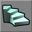
이것은 구부러진(나선형) 계단을 만듭니다. 계단은 지면까지 뻗어 있습니다 – 지면에서부터 계단이 하나씩 만들어져 필요한 높이까지 올라간다는 뜻입니다. 계단을 변경하기 위해 사용될 수 있는 설정들은 다음과 같습니다:
계단을 변경하기 위해 사용될 수 있는 설정들은 다음과 같습니다:
| InnerRadius | 계단의 가장 안쪽 반지름입니다. 이것은 최소한 1 유닛이어야 합니다. 이 값이 클수록 브러쉬 중심의 내부 면적이 커집니다. |
| StepHeight | 계단의 한 단이 이 높이로 만들어지고, 단의 수가 늘어남에 따라 증가합니다. 16 의 값이 사용되면 첫 번째 계단은 지면에서 16 유닛 높이이고, 다음 것은 32 유닛, 또 그 다음 것은 48 유닛 높이가 됩니다. |
| StepWidth | 계단의 넓이를 결정합니다.계단의 총 반경은 이 값을 InnerRadius 값에 첨가함으로써 결정됩니다. 그러므로 InnerRadius 가 256 으로, 계단의 넓이가 256 으로 설정되면 이 계단의 넓이는 256 유닛이지만 총 반경 (계단을 한 바퀴 도는 둘레)은 512 유닛이 됩니다. |
| AngleOfCurve | 계단의 둥근 정도를 결정합니다. 이 값으로 90 이 사용되면, 계단은 총 90 도를 돌게 되며, 360 은 완전히 둥근 계단을 만들어냅니다. |
| NumSteps | 계단을 형성하는 단의 총 수를 나타냅니다. 이것은 곡선의 각도에는 영향을 주지 않으며, 단지 이 숫자만큼의 단을 만들어내는 것입니다. |
| AddToFirstStep | 첫 번째로 만들어진 단에 일정한 높이를 추가합니다. 그리고 이 값을 이후에 만들어지는 각 단의 기초 높이에 추가합니다. 계단이 첫 번째 단이 첨가되기 전에 32 유닛의 높이여야 할 경우, 이 필드에 32 를 입력하면 브러쉬가 정확하게 만들어집니다. |
| GroupName | 나중에 브러쉬를 검색하거나 정렬하는 기준이 되는 선택적 옵션. |
| CounterClockwise | 계단을 시계 방향으로(가장 아래 단에서부터 가장 높은 단으로) 구부러지게 할 것인지 시계 반대 방향으로(가장 아래 단에서부터 가장 높은 단으로) 구부러지게 할 것인지 결정하는 true/false 필드입니다. |
Create Spiral Stair (나선형 계단 만들기)
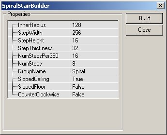
Spiral Staircase 에는 다음과 같은 설정들이 있습니다:| InnerRadius | 나선형 계단의 안쪽 반지름에 대한 설정입니다. |
| StepWidth | 계단에서 각 단의 실제 넓이를 설정합니다. |
| StepHeight | 각 단의 높이. 이 값과 계단의 단의 수가 계단 전체의 높이를 결정하게 됩니다. |
| StepThickness | 각 단의 두께를 결정합니다. 각 단의 수직 높이는 계단의 높이를 결정하는 것과는 아무 상관이 없으며, 오직 겉모습을 보기 좋게 하는데 영향이 있을 뿐입니다. |
| NumStepsPer360 | 360 도 회전에 들어가는 단의 수입니다. 이 값이 높을수록 완전한 원을 만드는데 필요한 단의 수가 늘어납니다. |
| NumSteps | 브러쉬에서 만들 단의 실제 수. NumStepsPer360 이 32 이고 이 필드의 값이 17 일 경우, 절반만 회전한 계단이 됩니다. 그렇지만 이 값을 33 으로 하면 완전히 한 바퀴 도는 계단이 됩니다. 이 값에는 필요한 것보다 한 단이 더 배치되도록 입력되어야 합니다. |
| GroupName | 나중에 브러쉬를 검색하거나 정렬하는 기준이 되는 선택적 옵션. |
| SlopedCeiling | 경사진 천장 (브러쉬의 아래쪽)이나 매끄러운 표면을 만드는데 사용되는 True 또는 False 옵션. |
| SlopedFloor | 위의 값과 마찬가지로, 표면을 경사지게 할것인지 단을 형성하도록 할것인지 결정하는데 사용됩니다. 그러나 이것은 브러쉬의 실제적인 윗부분을 다룹니다. 이 값이 true 로 설정되면 계단이 층계가 아니라 둥근 경사면으로 보입니다. |
| CounterClockWise | 계단이 시계 방향으로(가장 아래 단에서부터 가장 높은 단으로) 구부러지게 할 것인지 시계 반대 방향으로(가장 아래 단에서부터 가장 높은 단으로) 구부러지게 할 것인지 결정하는 true/false 필드입니다. |
Create Linear Stair (직선 계단 만들기)
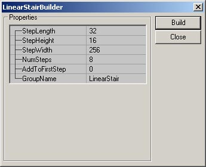
다음과 같은 설정으로 계단을 변경할 수 있습니다:| StepLength | 계단에서 각 단 상부의 길이. |
| StepWidth | 계단에서 각 단의 실제 넓이. |
| StepHeight | 각 단의 높이. 이 값과 계단의 단의 수가 계단 전체의 높이를 결정하게 됩니다. |
| NumSteps | 계단의 전체 길이를 결정합니다. 위의 이미지에서의 설정을 사용하면 256 유닛 길이의 계단이 만들어집니다 (NumSteps 8 x StepLength 32 = 256). |
| AddToFirstStep | 첫 번째로 만들어진 단에 일정한 높이를 추가합니다. 그리고 이 값을 이후에 만들어지는 각 단의 기초 높이에 추가합니다. 계단이 첫 번째 단이 첨가되기 전에 32 유닛의 높이여야 할 경우, 이 필드에 32 를 입력하면 브러쉬가 정확하게 만들어집니다. |
| GroupName | 나중에 브러쉬를 검색하거나 정렬하는 기준이 되는 선택적 옵션. |
Create BSP Terrain (BSP 지형 만들기)
 Create BSP Terrain 에는 다음과 같은 설정들이 있습니다:
Create BSP Terrain 에는 다음과 같은 설정들이 있습니다:
| Height | 브러쉬 전체의 높이를 결정합니다. |
| Width | 만들어지는 브러쉬의 넓이를 결정합니다. |
| Breadth | 브러쉬의 폭을 입력하는 필드입니다. |
| WidthSegments | 브러쉬의 넓이를 따라 이어 붙여지는 조각의 수입니다. 그러나 이 수가 브러쉬의 넓이와 함께 따라 자동적으로 증가하지는 않습니다. |
| DepthSegments | 위의 것과 같지만, 브러쉬의 폭을 따라 이어 붙여지는 조각의 수를 말합니다. |
| GroupName | 나중에 브러쉬를 검색하거나 정렬하는 기준이 되는 선택적 옵션. |
Create Sheet (시트 만들기)
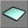
시트 또는 평평한 폴리곤을 만듭니다. 그러나 이 폴리곤은 절대 플레이어를 차단할 수 없습니다. 항상 직사각형의 폴리곤이 만들어집니다. 다음은 시트 브러쉬 빌더의 설정입니다:
다음은 시트 브러쉬 빌더의 설정입니다:
| Height | 브러쉬의 높이 (세로로 놓여 있다고 가정함). |
| Width | 브러쉬의 넓이. |
| HorizBreaks | 나중에 처리하기 위해 시트 브러쉬를 여러 개의 섹션으로 나눌 수 있습니다. 이 설정은 브러쉬가 수평으로 나뉘어지는 수를 결정합니다. 기본값은 1 이며, 이는 가로로 1 개의 섹션이 있다는 것을 뜻합니다. 즉 가로로 나누기가 없습니다. 숫자에 따라 섹션이 더 추가됩니다. |
| VertBreaks | 위와 같지만, 다른 방향으로 시트 섹션을 나눕니다. |
| Axis | 이 필드에 입력된 값에 따라 시트가 작성되었을 때 어느 방향으로 정렬될 것인지 결정됩니다. |
| GroupName | 나중에 브러쉬를 검색하거나 정렬하는 기준이 되는 선택적 옵션. |
Create Cylinder (원통 만들기)
 여기에는 다음의 설정들이 있습니다:
여기에는 다음의 설정들이 있습니다:
| Height | 실린더의 전체 높이 (한 평평한 면에서 다른 평평한 면까지). |
| OuterRadius | 원통의 반경. Hollow 가 true 일 경우에는 파이프의 바깥 가장자리를 가리킵니다. |
| InnerRadius | Hollow 가 true 이면, 이 값이 파이프 내부의 반경으로서 사용됩니다. 즉, 두 설정값 사이에 16 유닛의 차이가 있으면, 파이프의 반경이 256 유닛이더라도 두께는 16 유닛이 됩니다. |
| Sides | 원통을 구성하는 면의 수. 면이 4 이면 큐브 빌더를 만들 수 있는 원형이 만들어집니다. 이 값은 최소한 3 이어야 합니다 (2 이면 시트가 만들어집니다). |
| GroupName | 나중에 브러쉬를 검색하거나 정렬하는 기준이 되는 선택적 옵션. |
| AlignToSide | AlignToSide는 원통의 면들이 정렬되는 방법을 결정합니다. 이 값이 true 이면, 브러쉬의 바닥면이 X 축으로 정렬됩니다. 면의 수가 짝수일 경우에는 상부가 분명하게 정렬됩니다. 이 값이 false 이면, 브러쉬의 바닥이 두 면이 만나는 지점이 됩니다. |
| Hollow | 필요에 따라 속이 차거나 비어있는 브러쉬를 만드는데 사용되는 True/False 설정. |
Create Cone (원뿔 만들기)
 원뿔의 설정은 원통과 매우 비슷하지만, 몇 가지 설정을 더 가지고 있습니다:
원뿔의 설정은 원통과 매우 비슷하지만, 몇 가지 설정을 더 가지고 있습니다:
| Height | 원뿔의 전체 높이. |
| CapHeight | 원뿔이 Hollow 로 설정된 경우, 이 값이 브러쉬의 내부에서 캡이 놓여지는 높이를 결정합니다. 캡은 원뿔에서의 평평한 부분으로, 형체의 빌드가 중지되어 완성되는 지점입니다. |
| OuterRadius | 원뿔의 반경. |
| InnerRadius | Hollow 가 true 일 경우, 이 값이 원뿔의 내부 반경으로 사용됩니다. 즉, 두 설정값 사이에 16 유닛의 차이가 있으면, 원뿔의 반경이 256 유닛이더라도 두께가 16 유닛이 됩니다. |
| Sides | 원뿔을 이루는 면의 수를 말합니다. 이 값이 4 이면 피라미드가 됩니다. 이 값은 최소한 3 이어야 합니다 (2 이면 시트가 됩니다). |
| GroupName | 나중에 브러쉬를 검색하거나 정렬하는 기준이 되는 선택적 옵션. |
| AlignToSide | AlignToSide 는 원뿔의 면들이 정렬되는 방법을 결정합니다. 이 값이 true 이면,브러쉬의 바닥면이 X 축으로 정렬됩니다. 면의 수가 짝수일 경우에는 상부 역시 분명하게 정렬됩니다. 이 값이 false 이면, 브러쉬의 바닥이 두 면이 만나는 지점이 됩니다.. |
| Hollow | 필요에 따라 속이 차거나 비어있는 브러쉬를 만드는데 사용되는 True/False 설정. |
Create Volumetric Shape (볼류메트릭 형상 만들기)
 Volumetric 형상의 설정에는 다음과 같은 것들이 있습니다:
Volumetric 형상의 설정에는 다음과 같은 것들이 있습니다:
| Height | 완성 후의 브러쉬 높이. |
| Radius | 브러쉬의 각 부분이 중점으로부터 뻗어나간 거리. |
| NumSheets | 볼류메트릭 형체를 만드는데 사용되는 시트 브러쉬의 수. 기본값은 십자 모양을 만들게 되는 2 입니다. |
| GroupName | 나중에 브러쉬를 검색하거나 정렬하는 기준이 되는 선택적 옵션. |
Create Tetrahedron (4 면체 만들기)
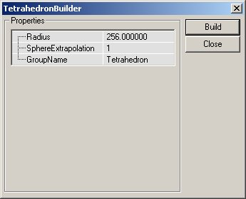
이 4 면체는 다음과 같은 설정들을 가지고 있습니다:| Radius | 브러쉬의 한가운데에서부터 가장 바깥쪽에 있는 정점까지의 거리. |
| SphereExtrapolation | 구체의 매끄러운 정도를 결정합니다. 외삽의 수치가 클수록 구체를 형성하는 삼각형들의 크기가 작아져서, 훨씬 더 둥근 모양이 만들어집니다. |
| GroupName | 나중에 브러쉬를 검색하거나 정렬하는 기준이 되는 선택적 옵션. |
CSG Operations (CSG 작업)
 이 버튼들은 브러쉬의 첨가, 빼내기, 교차, 비교차, 움직이는 브러쉬 및 하드웨어 브러쉬(정적 메쉬) 추가하기, 그리고 그밖의 많은 기능들을 사용할 수 있도록 합니다.
이 버튼들은 브러쉬의 첨가, 빼내기, 교차, 비교차, 움직이는 브러쉬 및 하드웨어 브러쉬(정적 메쉬) 추가하기, 그리고 그밖의 많은 기능들을 사용할 수 있도록 합니다.
Add Brush (브러쉬 첨가)
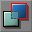
이 버튼을 누르면 환경 내에서 정확히 활성 브러쉬 (빨강색 브러쉬 윤곽이 있는 것)가 있는 위치에 첨가식 브러쉬가 만들어집니다. 활성 브러쉬에 텍스처 등에 관한 정보가 들어있을 경우에는 그 정보들이 새 첨가식 브러쉬에 복사됩니다. 그렇지 않은 경우에는 기본 텍스처(거품 비슷한)가 적용됩니다.Subtract Brush (브러쉬 빼내기)
Intersect Brush (브러쉬 교차)
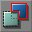
이 버튼은 활성 브러쉬를 레벨에 있는 도형과 교차합니다. 활성 브러쉬는 현재 환경에 있는 BSP 도형에 대해 점검됩니다. 교차하기의 효과는 빼내기식 도형 내의 어디서나 브러쉬가 삭제된다는 것입니다. 이것을 활성 브러쉬가 차지하고 있는 공간을 X로 하고, 도형에서의 빼내기식 공간을 Y로 하는 대수식으로 표현할 수 있을 것입니다. 대수식을 사용할 수 있는 것이 사실이라고 가정하면, 그 공식이 다음과 같이 될 것입니다 : X =De-Intersect Brush (브러쉬 비교차)
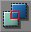
활성 브러쉬의 비교차를 수행합니다. 활성 브러쉬가 환경의 BSP 도형에 대해 점검되고, 첨가식 BSP 기반 도형이 존재하는 곳에 있는 것들만 재작성됩니다. 교차에서처럼, 이 기능도 대수식으로 표현할 수 있습니다. 활성 브러쉬가 차지하고 있는 공간을 X 로 하고, 레벨 내의 빼내기식 도형을 Y 로 하면 (레벨 전체는 원래 커다란 첨가식 공간, 즉 빼내기식 도형의 반대라는 점을 잊지 마십시오) 비교차를 다음과 같은 공식으로 표현할 수 있습니다: X = < Y AND > Y (= 은 같지 않다는 것을 뜻합니다) X = Y 이것은 Intersect 기능과 정반대의 결과를 낳습니다.Add Special Brush (특수 브러쉬 추가)
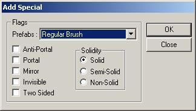
드롭다운 메뉴에서 아래에서 설명할, 사전 설정된 브러쉬 타입 가운데 하나를 선택할 수 있습니다. 또는 자신이 원하는 설정들을 입력하여 브러쉬를 새로 만들수 있습니다. 미리 설정된 것을 선택한 다음 필요할 경우 설정을 변경해도 됩니다. UnrealEd? 사용자 설명서의 Geometry 장에 브러쉬, 브러쉬의 타입 및 도형에 관한 자세한 정보가 수록되어 있습니다.- Invisible Collision Hull (보이지 않는 충돌의 겉): 플레이어에게는 보이지 않지만, 모든 움직임을 차단하고 기본으로 모든 액터들을 차단하는 브러쉬를 만듭니다.
- Zone Portal (존 포털): 존 포털이지만 완전히 보이지 않으며 견고하지 않은 브러쉬를 만듭니다.
- Anti-Portal (앤티 포털): 앤티 포털이지만 완전히 보이지 않으며 견고하지 않은 브러쉬를 만듭니다.
- Regular Brush (보통 브러쉬): 정상적인 첨가식 브러쉬입니다. 이 브러쉬에 대한 기본 설정과 Add Brush 버튼 (위에서 자세히 설명한)을 사용하여 만든 브러쉬에는 차이가 없습니다.
- Semi-Solid Brush (적당히 견고한 브러쉬): 이 사전 설정은 적당히 견고한 브러쉬를 만듭니다.
- Non-Solid Brush (견고하지 않은 브러쉬): 이 사전 설정은 견고하지 않은 브러쉬를 만듭니다.
Add StaticMesh (정적 메쉬 (또는 하드웨어 브러쉬) 추가)
Add Mover Brush (Mover 브러쉬 추가)
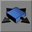
이 버튼은 Mover 브러쉬를 만듭니다. Mover 브러쉬는 특별한 타입의 브러쉬로, 설정된 이동 위치를 사용하여 환경을 통과해 이동할 수 있습니다. 이 주제에 대해서는 MoversTutorial 문서에서 깊이있게 다루고 있습니다. 이 버튼을 오른 클릭하면 엔진의 액터 클래스들로부터 Mover 타입의 목록이 열립니다. 귀사의 프로그래머들이 귀사의 소프트웨어에 필요한 Mover 클래스를 추가할 수 있습니다.Add Anti-Portal Brush (앤티 포털 브러쉬 추가)
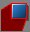
이것은 견고하지 않고 게임에서 보이지 않는 오렌지색 볼륨의 윤곽을 작성합니다. 이것은 렌더러가 필요 이상으로 그려내는 것을 예방하는 최적화에 사용됩니다. 앤티 포털에 관한 자세한 정보는 LevelOptimization 문서를 참고하십시오.Add Volume (볼륨 추가)
 볼륨에 대한 자세한 정보는 VolumesTutorialKR 을 참고하십시오.
볼륨에 대한 자세한 정보는 VolumesTutorialKR 을 참고하십시오.
선택 및 이동 속도
 이 버튼들은 환경에서 섹션들을 감추고 (대형 또는 복잡한 맵과 도형을 다루기 시작할 때 매우 편리함) 뷰포트에서 카메라의 이동 속도를 변경할 수 있도록 합니다.
이 버튼들은 환경에서 섹션들을 감추고 (대형 또는 복잡한 맵과 도형을 다루기 시작할 때 매우 편리함) 뷰포트에서 카메라의 이동 속도를 변경할 수 있도록 합니다.
Show Selected Actors (선택한 액터 보이기)
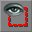
이 기능은 선택되지 않은 액터들을 모두 환경에서 숨기고 선택된 액터들을 무시합니다. 스크립트된 시퀀스가 작성되고 있고, 개발 과정에서 환경의 나머지를 무시하면서, 이벤트 라인들이 보일 필요가 있을 경우 매우 유용합니다.Show Selected Actors (선택한 액터 보이기)
이 기능은 선택되지 않은 액터들을 모두 환경에서 숨기고 선택된 액터들을 무시합니다. 스크립트된 시퀀스가 작성되고 있고, 개발 과정에서 환경의 나머지를 무시하면서, 이벤트 라인들이 보일 필요가 있을 경우 매우 유용합니다. 액터를 숨기는 것은 그들을 모든 뷰포트의 시야에서 제거하는 것입니다. 그렇지만 브러쉬들은 여전히 3D 뷰에서 렌더됩니다.Hide Selected Actors (선택한 액터 숨기기)
Show All Actors (액터 모두 보이기)
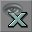
액터들을 표시하는 뷰포트에 모든 액터들을 나타냅니다 (이 문서의 다음 섹션에 뷰포트의 표시 모드에 관한 자세한 정보가 있습니다). 이 기능은 이전에 에디터에서 숨긴 액터들을 모두 보여줍니다.Invert Selection (거꾸로 선택하기)
Change Camera Speed (카메라 속도 바꾸기)
브러쉬 미러하기 및 기타 (2107 이후 빌드에서 버튼 사용 가능)
주:일부 현재 빌드에서는 이 버튼들을 이용할 수 없지만, 해당 브러쉬를 오른 클릭한 다음 "Transform (변환)"을 선택하면 이 기능들 가운데 몇 가지를 사용할 수 있습니다. 이 기능들은 작성하고 있는 브러쉬를 미러하고, 브러쉬 내의 객체를 보다 쉽게 선택할 수 있도록 합니다. 그러나 이 기능들은 UT2K3 빌드에 대해서만 이용할 수 있습니다.
이 기능들은 작성하고 있는 브러쉬를 미러하고, 브러쉬 내의 객체를 보다 쉽게 선택할 수 있도록 합니다. 그러나 이 기능들은 UT2K3 빌드에 대해서만 이용할 수 있습니다.
Mirror X (X 축으로 미러)
Mirror Y (Y 축으로 미러)
Mirror Z (Z 축으로 미러)
Select All Inside (내부의 것 모두 선택)
Clip Z in WireFrame (와이어프레임에서 z 클립)
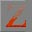
내용이 곧 추가됩니다.Align View on Actor (뷰를 액터에 정렬)
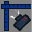
뷰포트에서 액터를 선택한 후 이 버튼을 누르면 2D 뷰포트가 모두 해당 액터에 집중하도록 하며, 3D 뷰포트에서는 카메라가 가까이 이동하여 그 액터를 향합니다.뷰포트
 다음 4 개의 아이템들은 열려있는 뷰포트들입니다.필요한 정보를 볼 수 있도록 이것들을 변경하거나 커스터마이즈할 수 있습니다. 대체로 3 개의 2 차원 뷰 (환경의 윗면, 정면, 측면을 나타내는)와 플레이어가 보게되는 것과 같은 세계의 3D 뷰인 동적 조명의 표시가 있습니다. 또한 모든 액터들과 실제 환경에서 플레이할 때는 보이지 않는 그밖의 정보도 보여줍니다.
다음 4 개의 아이템들은 열려있는 뷰포트들입니다.필요한 정보를 볼 수 있도록 이것들을 변경하거나 커스터마이즈할 수 있습니다. 대체로 3 개의 2 차원 뷰 (환경의 윗면, 정면, 측면을 나타내는)와 플레이어가 보게되는 것과 같은 세계의 3D 뷰인 동적 조명의 표시가 있습니다. 또한 모든 액터들과 실제 환경에서 플레이할 때는 보이지 않는 그밖의 정보도 보여줍니다.
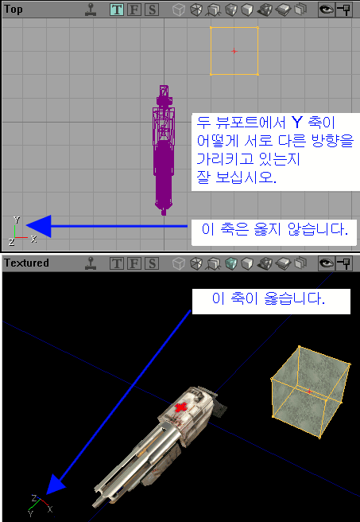
뷰포트의 콘트롤들
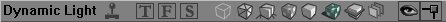
모든 뷰포트의 상단에는 버튼들이 있습니다. 우선, 버튼들이 무엇을 표시하는지 나타내는 버튼들이 있습니다(예를 들면 Top (상단), Dynamic Light (동적 광원), Perspective (투시), BSP Cuts (BSP 컷) 등이 포함되어 있습니다). 이것들은 빠른 참조로서, 이름 자체만으로도 충분히 설명됩니다. 그 다음에는 작은 조이스틱 아이콘이 있습니다. 이것은 뷰포트가 환경의 동적 이미지를 보여주는지 정적 이미지를 보여주는지 알려줍니다. 여기서의 차이점은 동적 광원 (깜박이거나 수시로 바뀌는 광원)같은 것들, 또는 그밖에도 무수히 많은 것들이 정적 뷰포트에서는 완전하게 표시되지 않는다는 것입니다. 동적 뷰포트는 다른 뷰포트에서 변경된 브러쉬와 액터의 위치도 업데이트합니다. 이 기능을 전혀 꺼둘 수 없는 것은 아닙니다. 이것은 실행에 리소스가 많이 필요하며 컴퓨터가 느려지는 원인이 될 수 있습니다. 이 기능을 동적 광원을 테스트한다거나 텍스처 등을 스크롤할 경우에만 사용한 다음, 편집을 계속할 때는 다시 보통 모드(정적)로 바꿀 것을 권합니다.뷰포트 윈도우의 설정들
 그밖에 뷰포트의 윈도우 크기를 변경할 수 있습니다. 원한다면 4 개의 주요 윈도우에 대해 다른 레이아웃을 선택할 수도 있습니다. 이 기능은 왼쪽에 표시된 메뉴를 통해 사용할 수 있습니다.
그밖에 뷰포트의 윈도우 크기를 변경할 수 있습니다. 원한다면 4 개의 주요 윈도우에 대해 다른 레이아웃을 선택할 수도 있습니다. 이 기능은 왼쪽에 표시된 메뉴를 통해 사용할 수 있습니다.
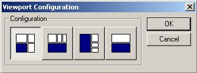
아래와 같은 윈도우가 나타나게 됩니다. 여기서 자신이 선호하는 작업 뷰포트를 표시하기에 가장 알맞은 레이아웃을 선택할 수 있습니다. 대화상자 내의 아이콘들이 뷰포트의 레이아웃을 보여줍니다. 아이콘에서 3D 뷰포트는 파랑색으로 표시되어 있습니다. 어느 뷰포트가 어떤 종류의 정보를 표시할 것인지를 변경하는 것은 아주 간단합니다 (아래에서 자세히 설명합니다). 이 메뉴를 선택하면 화면에 뷰포트가 다시 그려져 각각 독립적인 윈도우가 되어, 크기를 조정할 수 있게 됩니다. 또 이 모드에서는 뷰포트가 서로 겹쳐질 수 있습니다. 각 뷰포트는 다른 뷰포트들과 완전히 독립적으로 그려집니다. 이 모드의 뷰포트 표시는 또한 추가로 다른 뷰포트가 열리는 것도 허용하므로, 4 개의 표준 뷰포트보다 많은 뷰포트를 가질 수 있습니다. 추가 뷰포트에 관한 상세 정보는 아래를 참고하십시오.
이 메뉴를 선택하면 화면에 뷰포트가 다시 그려져 각각 독립적인 윈도우가 되어, 크기를 조정할 수 있게 됩니다. 또 이 모드에서는 뷰포트가 서로 겹쳐질 수 있습니다. 각 뷰포트는 다른 뷰포트들과 완전히 독립적으로 그려집니다. 이 모드의 뷰포트 표시는 또한 추가로 다른 뷰포트가 열리는 것도 허용하므로, 4 개의 표준 뷰포트보다 많은 뷰포트를 가질 수 있습니다. 추가 뷰포트에 관한 상세 정보는 아래를 참고하십시오.
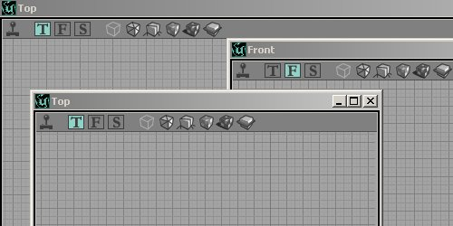
추가 뷰포트가 필요할 때라면, 아마 환경을 줌인하고 그 중 한 섹션을 유지하기 위해 또는 표시 모드를 추가하기 위해서일 것입니다 (표시 모드에 관한 상세 정보는 아래를 참고하십시오). 이런 경우 뷰포트 윈도우를 더 만들 수 있습니다. 그러나 이 기능은 뷰포트 표시가 floating (부동)으로 설정되었을 때만 이용할 수 있습니다 (위 참고). 새로 만들어지는 기본 뷰포트는 2D 에서 맵을 위에서 아래를 향해 표시하는 작은 윈도우입니다. 왼쪽의 이미지는 새로 작성되어 서로 겹쳐있는 복수의 뷰포트를 보여주고 있습니다. 진실로 뭔가 특별한 것을 원한다면 뷰포트 뒤의 배경 공간을 변경할 수 있습니다. "View" 메뉴에서 맨 아래의 "Background Image (배경 이미지)"를 선택하면 됩니다. 이것은 썩 유용한 기능이라고 할 수는 없는데, (이미지가 뷰포트 내가 아니라 뷰포트의 뒤에 넣어진다는 것을 확인하고 나면) 굳이 설명할 필요가 없을 것입니다.
뷰포트 표시 모드
 Perspective (투시) - 환경이 와이어프레임 뷰에서 렌더됩니다. 각 브러쉬가 채색된 윤곽으로서 그려진다는 뜻입니다. 브러쉬의 타입이 2D 뷰에서 그려진 것과 같은 색으로 그려져, 정확한 지역 및/또는 브러쉬 타입 찾기를 쉽게 합니다.
Perspective (투시) - 환경이 와이어프레임 뷰에서 렌더됩니다. 각 브러쉬가 채색된 윤곽으로서 그려진다는 뜻입니다. 브러쉬의 타입이 2D 뷰에서 그려진 것과 같은 색으로 그려져, 정확한 지역 및/또는 브러쉬 타입 찾기를 쉽게 합니다.
 Texture Usage (텍스처 사용) - 환경이 조명 없이 렌더됩니다. 사용된 각 텍스처는 같은 색으로 그려집니다. 이것은 많은 수의 텍스처를 가진 (재생되는 동안 그래픽 처리 하드웨어에 높은 리소스를 요구할 가능성이 있는) 지역을 쉽게 찾을 수 있도록 합니다. 하드웨어 브러쉬들은 정상대로 렌더되지만 그 위에는 조명이 전혀 렌더되지 않습니다.
Texture Usage (텍스처 사용) - 환경이 조명 없이 렌더됩니다. 사용된 각 텍스처는 같은 색으로 그려집니다. 이것은 많은 수의 텍스처를 가진 (재생되는 동안 그래픽 처리 하드웨어에 높은 리소스를 요구할 가능성이 있는) 지역을 쉽게 찾을 수 있도록 합니다. 하드웨어 브러쉬들은 정상대로 렌더되지만 그 위에는 조명이 전혀 렌더되지 않습니다.
 BSP Cuts (BSP 컷) - 엔진이 BSP 컷을 작성한 곳을 보여주는 환경을 렌더합니다. 환경은 기본 색상으로 렌더되며, 컷이 만들어진 곳들을 표시하는 여러 음영들이 있습니다. 이것은 레벨에 지나치게 많은 BSP 컷을 만든(따라서 프레임 속도에 좋지 않은 영향을 주는) 지역이나 구체적인 브러쉬를 골라내는데 도움이 됩니다.
BSP Cuts (BSP 컷) - 엔진이 BSP 컷을 작성한 곳을 보여주는 환경을 렌더합니다. 환경은 기본 색상으로 렌더되며, 컷이 만들어진 곳들을 표시하는 여러 음영들이 있습니다. 이것은 레벨에 지나치게 많은 BSP 컷을 만든(따라서 프레임 속도에 좋지 않은 영향을 주는) 지역이나 구체적인 브러쉬를 골라내는데 도움이 됩니다.
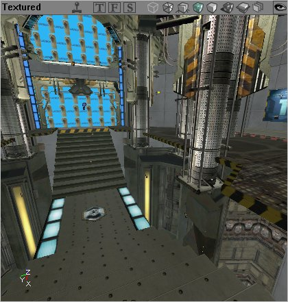
Textured (텍스처됨) - 환경이 여러분이 선택하여 표면에 배치한 텍스처들을 가진 3D 세계로서 렌더됩니다. 그러나 어떤 식으로도 lit 되지 않습니다. 이 모드는 텍스처들이 완벽하게 놓여지는 것이 보장되도록 정렬하는데 매우 유용합니다. 이 모드에는 전혀 조명 효과가 없으며, 따라서 텍스처들이 레벨에서 동적 조명을 가진 때와 똑같이 보이지 않을 수 있다는 것을 유념하십시오 (분명히 다를 것입니다). Lighting (조명) - 환경이 검정에서 흰색으로 수시로 변화하는 음영으로서 렌더됩니다. BSP 기반이든, 하드웨어나 지형을 기반으로 하든, 모든 브러쉬들이 순전히 그들이 받는 광원의 양에 따라 렌더됩니다. 표면을 밝게하는 광원이 많을수록 표면의 색이 엷어집니다. 이 모드는 정확한 그림자를 작성할 때 (텍스처는 그 자체의 음영이 수시로 변화하기 때문에, 흔히 지역에 비추어지는 광원의 실제 양을 왜곡시킵니다), 또는 한 지역의 현재 조명을 점검할 때 (역시 위와 같은 이유에서) 가장 널리 사용됩니다.
Lighting (조명) - 환경이 검정에서 흰색으로 수시로 변화하는 음영으로서 렌더됩니다. BSP 기반이든, 하드웨어나 지형을 기반으로 하든, 모든 브러쉬들이 순전히 그들이 받는 광원의 양에 따라 렌더됩니다. 표면을 밝게하는 광원이 많을수록 표면의 색이 엷어집니다. 이 모드는 정확한 그림자를 작성할 때 (텍스처는 그 자체의 음영이 수시로 변화하기 때문에, 흔히 지역에 비추어지는 광원의 실제 양을 왜곡시킵니다), 또는 한 지역의 현재 조명을 점검할 때 (역시 위와 같은 이유에서) 가장 널리 사용됩니다.
 Dynamic Lighting (동적 조명) - 뷰포트가 동적 조명으로 설정된 경우, 이는 조명을 플레이어가 엔진에서 보게 되는 것처럼 완전하게 렌더합니다. 그러나 동적 조명이란 원래 동적인 광원(예: 트리거된 것 또는 번쩍이는 것)이 그 자체로 렌더된다는 것을 뜻하는 것이 아닙니다. 이러한 광원들은 그들의 첫 번째 인스턴스(엔진이 처음 시작될 때 보이는 모습)에서만 렌더됩니다. 광원 등의 동적인 효과를 보기 원한다면, 뷰포트가 환경을 동적으로 표시하는 기능을 유효화 해야 합니다 (위에서 자세히 설명한대로 작은 조이스틱 아이콘을 누름으로써).
Dynamic Lighting (동적 조명) - 뷰포트가 동적 조명으로 설정된 경우, 이는 조명을 플레이어가 엔진에서 보게 되는 것처럼 완전하게 렌더합니다. 그러나 동적 조명이란 원래 동적인 광원(예: 트리거된 것 또는 번쩍이는 것)이 그 자체로 렌더된다는 것을 뜻하는 것이 아닙니다. 이러한 광원들은 그들의 첫 번째 인스턴스(엔진이 처음 시작될 때 보이는 모습)에서만 렌더됩니다. 광원 등의 동적인 효과를 보기 원한다면, 뷰포트가 환경을 동적으로 표시하는 기능을 유효화 해야 합니다 (위에서 자세히 설명한대로 작은 조이스틱 아이콘을 누름으로써).
 Zone Portal (존 포털) - 존 포털 모드는 각 존을 다른 색으로 렌더하며, 동시에 각 존에서 BSP 컷이 만들어진 곳을 표시합니다 (위에서 설명한 BSP Cuts 모드처럼).
Zone Portal (존 포털) - 존 포털 모드는 각 존을 다른 색으로 렌더하며, 동시에 각 존에서 BSP 컷이 만들어진 곳을 표시합니다 (위에서 설명한 BSP Cuts 모드처럼).
 Depth Complexity (깊이의 복잡도) - 이 뷰는 특정 환경에서 무엇이 프레임 속도를 떨어뜨리고 있는지 추적하는 훌륭한 수단입니다. 초록에서 빨강에 이르는 범위의 색상들은, 환경을 정확하게 렌더하기 위해, 렌더된 것들의 패스의 수를 나타냅니다. 초록색 지역은 단 한 개의 패스만이 요구되는 것들이고, 오렌지색은 몇 개의 패스, 그리고 빨강색은 렌더에 지나치게 많은 패스가 사용되고 있다는 것을 가리킵니다. 가능한 한 최선의 프레임 속도를 달성하려면 빨강색 지역이 정정되어야 합니다.
Depth Complexity (깊이의 복잡도) - 이 뷰는 특정 환경에서 무엇이 프레임 속도를 떨어뜨리고 있는지 추적하는 훌륭한 수단입니다. 초록에서 빨강에 이르는 범위의 색상들은, 환경을 정확하게 렌더하기 위해, 렌더된 것들의 패스의 수를 나타냅니다. 초록색 지역은 단 한 개의 패스만이 요구되는 것들이고, 오렌지색은 몇 개의 패스, 그리고 빨강색은 렌더에 지나치게 많은 패스가 사용되고 있다는 것을 가리킵니다. 가능한 한 최선의 프레임 속도를 달성하려면 빨강색 지역이 정정되어야 합니다.
 Large Vertices (큰 정점) - Large Vertices 는 이름에서 암시하듯 선택된 브러쉬에 큰 정점들을 표시합니다. 이 이미지에서 왼쪽 위의 부분에는 선택된 브러쉬의 큰 정점들이 들어 있습니다. BSP 가 아닌 브러쉬에서는 이것들을 편집할 수 없습니다.
적절한 아이콘을 클릭하여 뷰포트가 다른 방법으로 환경을 렌더하도록 할 수 있습니다. 아니면 아이콘들이 들어있는 작은 막대를 오른 클릭하여 모드를 변경할 수 있습니다 (아래에서 상세히 설명합니다).
Large Vertices (큰 정점) - Large Vertices 는 이름에서 암시하듯 선택된 브러쉬에 큰 정점들을 표시합니다. 이 이미지에서 왼쪽 위의 부분에는 선택된 브러쉬의 큰 정점들이 들어 있습니다. BSP 가 아닌 브러쉬에서는 이것들을 편집할 수 없습니다.
적절한 아이콘을 클릭하여 뷰포트가 다른 방법으로 환경을 렌더하도록 할 수 있습니다. 아니면 아이콘들이 들어있는 작은 막대를 오른 클릭하여 모드를 변경할 수 있습니다 (아래에서 상세히 설명합니다).
그밖의 뷰포트 메뉴
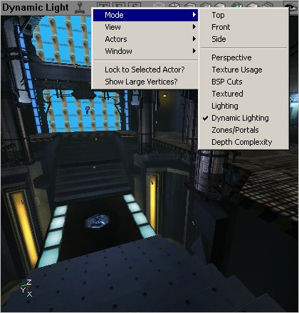
뷰포트의 툴바를 오른 클릭해도 뷰포트에 표시하는 것들 및 그 방법을 변경할 수 있습니다. 툴바를 오른 클릭하면 다움과 같은 옵션이 나타납니다: 이것은 윈도우가 어느 뷰 모드에 있게될 것인지 선택할 수 있도록 합니다. 여러가지 다른 모드들에 대해서는 위에서 설명드렸습니다.
이것은 윈도우가 어느 뷰 모드에 있게될 것인지 선택할 수 있도록 합니다. 여러가지 다른 모드들에 대해서는 위에서 설명드렸습니다.
 풀다운 메뉴에 있는 다음의 옵션들은 레벨을 형성하는 여러 다양한 부분들을 나타내거나 숨길 수 있도록 합니다.
풀다운 메뉴에 있는 다음의 옵션들은 레벨을 형성하는 여러 다양한 부분들을 나타내거나 숨길 수 있도록 합니다.
 이 풀다운 메뉴는 레벨에 있는 액터들에 대한 표시 모드를 설정하도록 합니다.
이 풀다운 메뉴는 레벨에 있는 액터들에 대한 표시 모드를 설정하도록 합니다.
 여기서는 에디터에서 해당 뷰포트를 16 비트 색상으로 표시할 것인지 32 비트 색상으로 표시할 것인지 선택할 수 있습니다.
여기서는 에디터에서 해당 뷰포트를 16 비트 색상으로 표시할 것인지 32 비트 색상으로 표시할 것인지 선택할 수 있습니다.
명령 프롬프트 및 설정
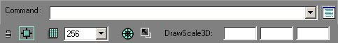
에디터를 한층 더 수정하고, 약간의 간단한 선택을 설정하고, 명령 프롬프트에 직접 명령어를 입력 (로그에 추가되거나 또는 명령 설정대로 하도록) 할 수 있도록 하는 추가 도구들입니다. 이 그림은 인쇄된 페이지에 맞도록 조절된 것입니다. (DrawScale3D 필드는 v2226+ 빌드에서만 이용할 수 있습니다.)명령 프롬프트와 로그 윈도우
명령 프롬프트는 콘솔 명령을 에디터에 입력할 수 있도록 합니다. 어떤 명령들은 뷰포트에 정보를 표시하고, 어떤 것들은 로그 윈도우에 정보를 출력합니다.명령 프롬프트
로그 윈도우
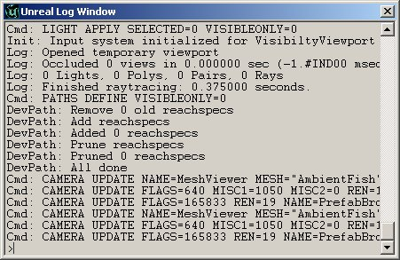
로그 윈도우에도 명령 프롬프트에 명령어를 입력하는 것처럼 직접 명령어를 입력할 수 있는 프롬프트가 있습니다.